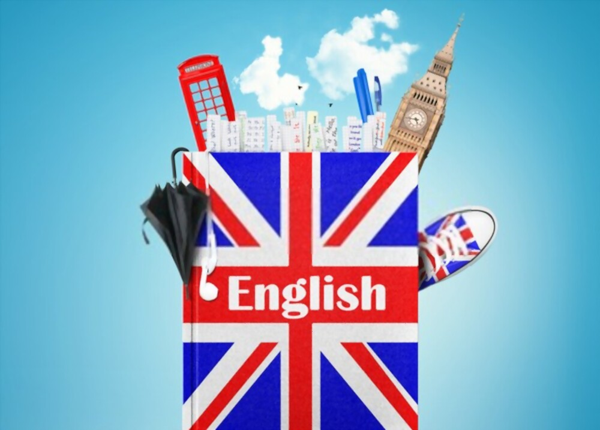

<ion-header [translucent]="true">
  <ion-toolbar>
    <ion-title>
      DoAdil
    </ion-title>
  </ion-toolbar>
</ion-header>

<ion-content [fullscreen]="true">
    

  <ion-button  name="airplane-outline" expand="block" color="success">
    <ion-icon name="airplane-outline"></ion-icon> Viajar
  </ion-button>
  <ion-button  expand="block" color="secondary">
    <ion-icon name="pizza-outline"></ion-icon>
    Comida</ion-button>
  <ion-button  expand="block" color="tertiary">
    <ion-icon name="tv-outline"></ion-icon>
    Informática</ion-button>
  <ion-button  expand="block" color="danger">
    <ion-icon name="globe"></ion-icon>
    Ciudades y Nacionalidades</ion-button>


</ion-content>
